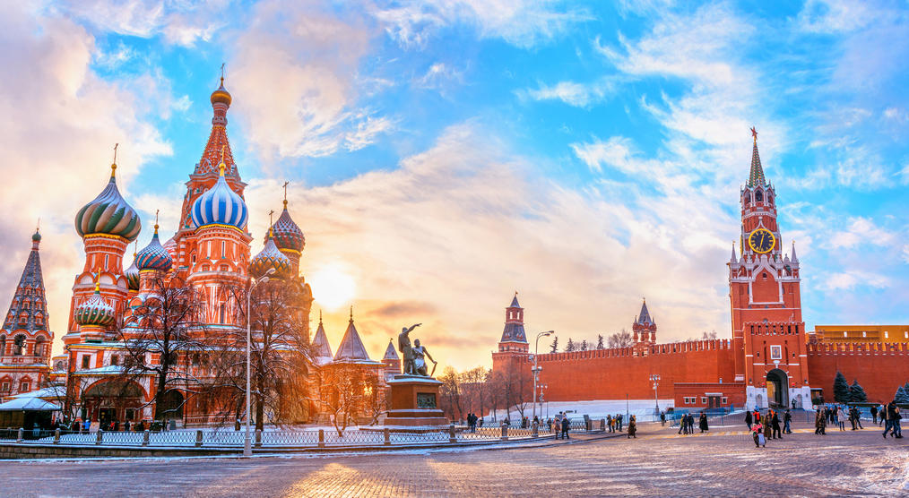
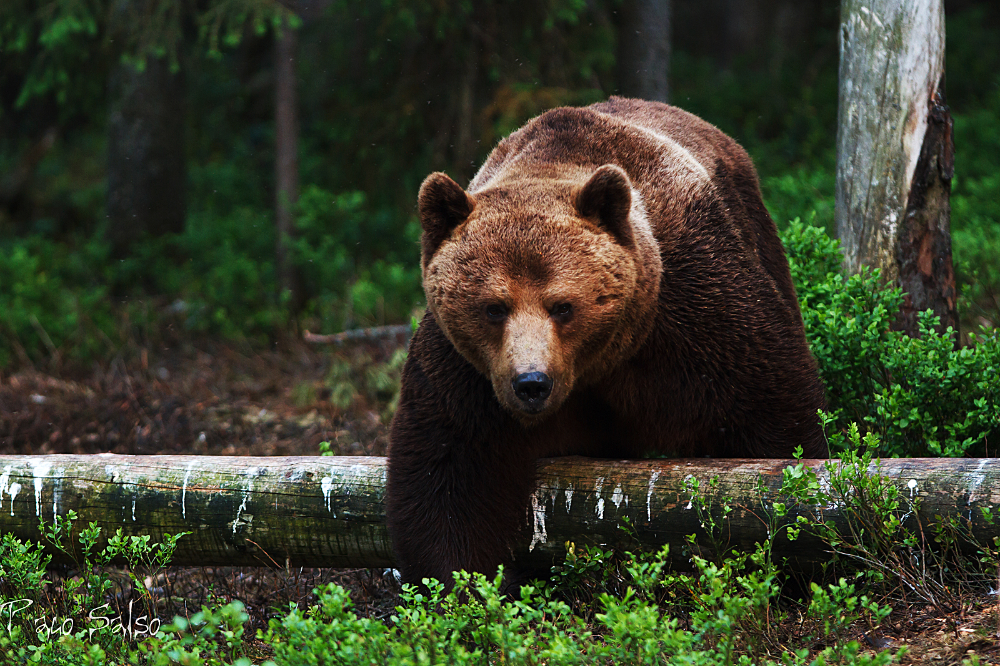
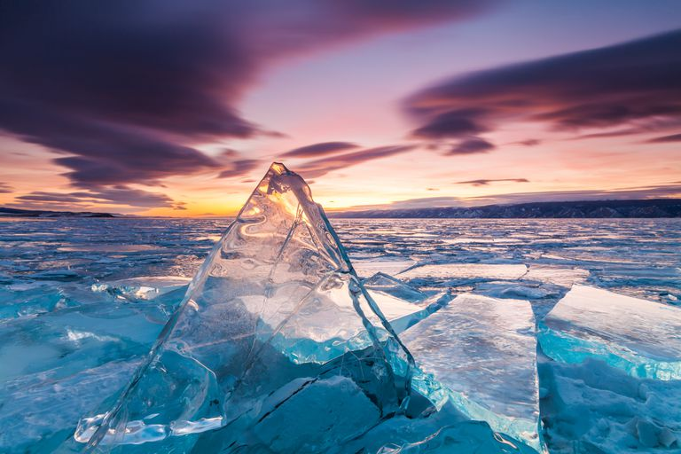

Hay tanto y tanto que ver en Rusia que necesitaríamos varias semanas para descubrirla por completo, pero te recomendamos algunas de sus atracciones más conocidas.
Este verdadero tesoro todavía por descubrir por muchos turistas ofrece rico patrimonio histórico y cultural, naturaleza salvaje, estepas montañosas y un vasto territorio que le convierte en el país más grande del mundo. En esta web os enseñamos los puntos más visitados de sus dos principales ciudades, Moscú y San Petersburgo, además de otros lugares turísticos de Rusia para los que es necesario un trayecto en avión de casi nueve horas.
La ‘Casa Blanca rusa’ está formada por un conjunto de edificios civiles y religiosos, cuatro palacios y cuatro catedrales, para ser exactos, agrupados en un recinto que delimita con la Muralla del Kremlin. El primero de esta lista de lugares turísticos de Rusia está abierto al público desde 1955, y en 1990 fue incluido en la lista de Patrimonios de la Humanidad de la Unesco. Puede visitarse con dos tipos de entrada: una para el territorio exterior del Kremlin y la plaza de las catedrales, y otra para acceder al museo de la Armería. Ambas merecen la pena. La palabra Kremlin significa fortaleza o ciudad fortificada. En Rusia puedes encontrarte con más de 20 Kremlins, la mayoría en antiguas ciudades medievales que con el paso del tiempo han ido creciendo y su población se ha ido extendiendo más allá de los muros. El más famoso es el Kremlin de Moscú (San Petersburgo no posee Kremlin) cuyo significado desde la época soviética se ha transformado y convertido en sinónimo de “Gobierno de Rusia”, de la misma manera que la Casa Blanca es el gobierno de los Estados Unidos.
La ‘Casa Blanca rusa’ está formada por un conjunto de edificios civiles y religiosos, cuatro palacios y cuatro catedrales, para ser exactos, agrupados en un recinto que delimita con la Muralla del Kremlin. El primero de esta lista de lugares turísticos de Rusia está abierto al público desde 1955, y en 1990 fue incluido en la lista de Patrimonios de la Humanidad de la Unesco. Puede visitarse con dos tipos de entrada: una para el territorio exterior del Kremlin y la plaza de las catedrales, y otra para acceder al museo de la Armería. Ambas merecen la pena. La palabra Kremlin significa fortaleza o ciudad fortificada. En Rusia puedes encontrarte con más de 20 Kremlins, la mayoría en antiguas ciudades medievales que con el paso del tiempo han ido creciendo y su población se ha ido extendiendo más allá de los muros. El más famoso es el Kremlin de Moscú (San Petersburgo no posee Kremlin) cuyo significado desde la época soviética se ha transformado y convertido en sinónimo de “Gobierno de Rusia”, de la misma manera que la Casa Blanca es el gobierno de los Estados Unidos.